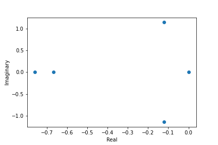

Graph
Number of words associated with this graph: 72
Interlace Polynomial
Polynomial: Poly(6*x**5 + 10*x**4 + 13*x**3 + 12*x**2 + 4*x, x, domain='ZZ')
Roots: [-0.12040192+1.14135272j -0.12040192-1.14135272j -0.75919615+0.j

Interlace Polynomial Two Var
Polynomial: Poly(x**4*y**5 + 9*x**4*y**4 + 32*x**4*y**3 + 58*x**4*y**2 + 56*x**4*y + 24*x**4 + 4*x**2*y**5 + 26*x**2*y**4 + 69*x**2*y**3 + 97*x**2*y**2 + 72*x**2*y + 20*x**2 + y**5 + 5*y**4 + 12*y**3 + 16*y**2 + 9*y + 1, x, y, domain='ZZ')
Coefficients heat map: